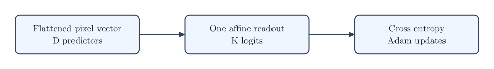
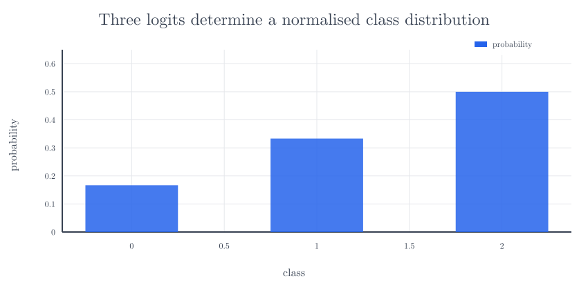
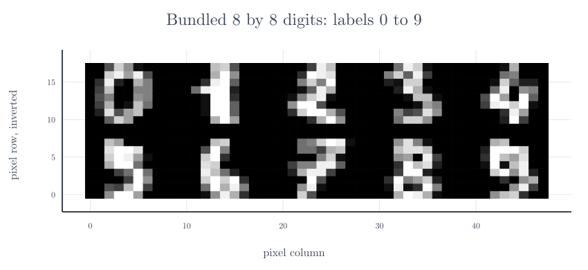
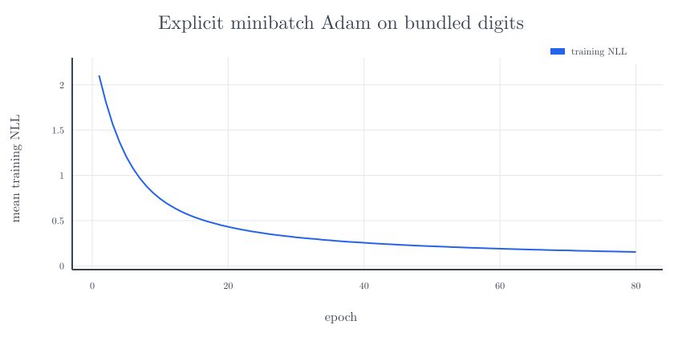
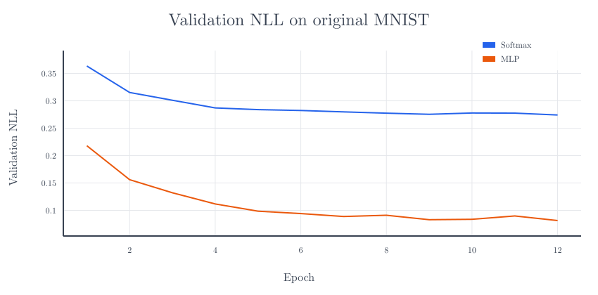

Softmax Digit Classification: A Linear Readout
Abstract
A flattened digit image must be mapped to one of ten classes. A linear softmax readout provides a simple baseline with an explicit probability normalization and cross-entropy objective. We derive its score on three logits, then run a fixed offline demonstration on the bundled 8×8 digits data. A second experiment fits a linear head and a multilayer perceptron to the official 28×28 MNIST splits.
The method
A D-pixel input produces K logits z=xW+b. Stable softmax subtracts their maximum before exponentiating; adding a common constant leaves probabilities unchanged. For class c,
The linear model has DK+K learned scalars: 7850 for MNIST's 784 pixels and 10 classes, or 650 for 64 bundled digit pixels. Decision boundaries are affine in the pixel features. Training costs O(NDK) per epoch. Both experiments use a tensor ParameterStore and minibatch Adam. Bundled digit intensities divide by 16. Original MNIST intensities divide by 255, and validation loss selects the checkpoint.
The concept diagram below is drawn by dm::graphics::Diagram. Its editable C++
source is the complete block below; regeneration uses the same datamunge toolchain
as the numerical examples. Exports consume the saved local SVG.
#include <dm/dm.hpp>
int main() {
std::filesystem::create_directories("build");
dm::graphics::Diagram diagram;
diagram.node("n0", {0.0, 0}, "Flattened pixel vector\nD predictors");
diagram.node("n1", {5.2, 0}, "One affine readout\nK logits");
diagram.node("n2", {10.4, 0}, "Cross entropy\nAdam updates");
diagram.edge("n0", "n1").edge("n1", "n2");
diagram.save_svg("build/softmax_mnist_concept.svg");
}
Simple examples
Logits (0,log 2,log 3) yield (1/6,1/3,1/2); the last class has NLL log 2.
#include <dm/dm.hpp>
int main() {
namespace n = dm::nn;
auto z =
n::tensor({0, std::log(2.), std::log(3.)}, {1, 3}, n::DType::Float64).requires_grad_();
const auto labels = n::from_vector(std::vector<int64_t>{2}),
loss = n::sparse_softmax_cross_entropy(z, labels), p = n::softmax(z, 1),
g = n::grad(loss, {z})[0];
const double shift = n::max(n::abs(p - n::softmax(z + 1000, 1))).item();
if (shift > 1e-12 || std::abs(loss.item() - std::log(2.)) > 1e-12)
return 1;
auto plot = dm::graphics::RPlot::create();
plot.bars({0, 1, 2}, p.to_vector<double>(), "probability", {37, 99, 235}, .5)
.title("Three logits determine a normalised class distribution")
.x_label("class")
.y_label("probability")
.y_limits(0, .65);
std::filesystem::create_directories("build");
plot.size(850, 420).save_svg("build/softmax_mnist_three.svg");
dm::dstruct::DataFrame t;
t.add_column("class", std::vector<double>{0, 1, 2});
t.add_column("probability", p.to_vector<double>());
t.add_column("gradient", g.to_vector<double>());
std::print("{}\n\nNLL {:.9f}; shift-invariance error {:.12f}.\n", t.to_md(8), loss.item(),
shift);
}| class | probability | gradient |
|---|---|---|
| 0 | 0.16666667 | 0.16666667 |
| 1 | 0.33333333 | 0.33333333 |
| 2 | 0.50000000 | -0.50000000 |
NLL 0.693147181; shift-invariance error 0.000000000000.

Checking the theory
The common-shift check above probes a softmax symmetry at logits near 1000. The dataset block also checks every held-out probability row sums to one.
A dataset example
Pixels divide by the known maximum 16. A seeded stratified four-fold split reserves fold zero; all 80 training epochs and Adam state updates are visible. The held-out data never select an epoch.
#include <dm/dm.hpp>
int main() {
namespace n = dm::nn;
const auto data = dm::datasets::digits();
std::vector<double> pixels;
std::vector<int> seen(10);
for (int digit = 0; digit < 10; ++digit) {
for (size_t row = 0; row < data.nrows(); ++row) {
if (int(data.get_column("digit").values()[row]) != digit)
continue;
for (int j = 0; j < 64; ++j)
pixels.push_back(data.get_column("pixel_" + std::to_string(j)).values()[row] / 16.);
break;
}
}
const auto sheet = n::image_grid(n::from_vector(pixels, {10, 8, 8, 1}), 5, 2, 0.);
std::vector<double> horizontal(sheet.size(1)), vertical(sheet.size(0));
std::iota(horizontal.begin(), horizontal.end(), 0.);
std::iota(vertical.begin(), vertical.end(), 0.);
std::vector<std::vector<double>> intensity(horizontal.size(),
std::vector<double>(vertical.size()));
for (size_t x = 0; x < horizontal.size(); ++x)
for (size_t y = 0; y < vertical.size(); ++y)
intensity[x][y] = sheet.at({int64_t(vertical.size() - 1 - y), int64_t(x), 0});
std::vector<dm::graphics::RGB> grayscale;
for (int value = 0; value < 256; ++value) {
grayscale.push_back({value, value, value});
}
auto p = dm::graphics::RPlot::create();
p.image(horizontal, vertical, intensity, grayscale, 0, 1)
.title("Bundled 8 by 8 digits: labels 0 to 9")
.x_label("pixel column")
.y_label("pixel row, inverted");
std::filesystem::create_directories("build");
p.size(850, 390).save_svg("build/softmax_mnist_inputs.svg");
std::print("First dataset row of each class; labels 0..4 above 5..9.\n");
}First dataset row of each class; labels 0..4 above 5..9.

The bundled digits table has 1797 images, each 8×8 with intensities 0..16. It is distinct from MNIST. A seeded stratified four-fold holdout and all settings are fixed in advance; test observations do not set scales or choose the training budget.
#include <dm/dm.hpp>
int main() {
namespace n = dm::nn;
n::set_num_threads(2);
const auto data = dm::datasets::digits();
std::vector<double> values;
std::vector<int> ids;
const auto labels = data.get_column("digit").values();
for (size_t row = 0; row < data.nrows(); ++row) {
ids.push_back(int(labels[row]));
for (int j = 0; j < 64; ++j)
values.push_back(data.get_column("pixel_" + std::to_string(j)).values()[row] / 16.);
}
const auto x =
n::cast(n::from_vector(values, {int64_t(data.nrows()), 64}), n::DType::Float32);
const auto y = n::from_vector(std::vector<int64_t>(ids.begin(), ids.end()));
const auto split = n::ml::StratifiedKFold(ids, 4, 2026)[0];
const std::vector<int64_t> tr(split.training.begin(), split.training.end());
const std::vector<int64_t> te(split.validation.begin(), split.validation.end());
const auto tx = n::take_rows(x, tr), ty = n::take_rows(y, tr);
const auto vx = n::take_rows(x, te), vy = n::take_rows(y, te);
n::ParameterStore parameters(17);
auto logits = [&](const n::Tensor &input) {
return n::dense(parameters, "output", input, 10);
};
{
n::NoGradGuard guard;
logits(n::take_rows(tx, {0}));
}
n::OptimizerConfig config;
config.kind = n::OptimizerKind::Adam;
n::Optimizer optimizer(parameters, .003, config);
n::BatchOrder batches(tx.size(0), 64, 17);
std::vector<double> epoch, training_nll;
for (int e = 0; e < 80; ++e) {
batches.begin_epoch();
for (auto rows = batches.next(); !rows.empty(); rows = batches.next()) {
const auto prediction = logits(n::take_rows(tx, rows));
auto objective = n::sparse_softmax_cross_entropy(prediction, n::take_rows(ty, rows));
// L2 applies to kernels, leaving biases unpenalised.
for (const auto &weight : parameters.parameters())
if (weight.dim() == 2)
objective = objective + .00005 * n::sum(n::square(weight));
optimizer.minimize(objective);
}
n::NoGradGuard guard;
epoch.push_back(e + 1);
training_nll.push_back(n::sparse_softmax_cross_entropy(logits(tx), ty).item());
}
n::NoGradGuard guard;
const auto z = logits(vx), p = n::softmax(z, 1);
const double accuracy = n::accuracy(z, vy),
nll = n::sparse_softmax_cross_entropy(z, vy).item();
const double mass_error = n::max(n::abs(n::sum(p, {1}) - 1)).item();
if (mass_error > 2e-6 || accuracy < .85)
return 1;
auto plot = dm::graphics::RPlot::create();
plot.lines(epoch, training_nll, "training NLL", {37, 99, 235})
.title("Explicit minibatch Adam on bundled digits")
.x_label("epoch")
.y_label("mean training NLL");
std::filesystem::create_directories("build");
plot.size(850, 420).save_svg("build/softmax_mnist_digits.svg");
std::print("{} training rows; {} held-out rows; 80 epochs; {} Adam updates.\n\nAccuracy "
"{:.6f}; NLL {:.6f}; maximum mass error {:.9f}.\n",
tx.size(0), vx.size(0), optimizer.iterations(), accuracy, nll, mass_error);
}1347 training rows; 450 held-out rows; 80 epochs; 1760 Adam updates.
Accuracy 0.951111; NLL 0.179803; maximum mass error 0.000000119.

Original MNIST benchmark
The linear softmax model learns 7,850 parameters. The MLP adds ReLU layers of width 128 and 64 for 109,386 parameters. Both use the official 28×28 images scaled to [0, 1]. Shuffle the 60,000 training rows once with seed 2026, keep 5,000 for validation, and fit for 12 epochs in batches of 256. After each epoch, measure validation negative log likelihood (NLL) and save a checkpoint if it improves. Restore that checkpoint before evaluating the 10,000 test rows.
The program reads standard IDX files from DM_MNIST_DIR when set.
Otherwise it uses Datamunge's MNIST dataset cache.
#include <dm/dm.hpp>
int main() {
namespace n = dm::nn;
n::set_num_threads(4);
const char* configured = std::getenv("DM_MNIST_DIR");
const std::string directory = configured ? configured : dm::datasets::fetch("mnist");
const auto train = n::load_mnist(directory, "train");
const auto train_x = train.images.reshape({60000, 784});
if (train.images.shape() != n::Shape{60000,28,28,1} || train.labels.shape() != n::Shape{60000})
throw std::runtime_error("Expected the official 60,000 MNIST training rows");
std::vector<std::int64_t> order(60000);
std::iota(order.begin(), order.end(), 0);
std::mt19937_64 split(2026);
std::shuffle(order.begin(), order.end(), split);
const std::vector<std::int64_t> validation_rows(order.begin()+55000, order.end());
const auto validation_x = n::take_rows(train_x, validation_rows);
const auto validation_y = n::take_rows(train.labels, validation_rows);
std::filesystem::create_directories("build");
auto plot = dm::graphics::RPlot::create();
struct Experiment {
std::string name;
std::vector<int> hidden;
double rate, minimum_accuracy;
int parameters;
dm::graphics::RGB color;
};
const std::vector<Experiment> experiments{
{"Softmax", {}, .003, .90, 7850, {37,99,235}},
{"MLP", {128,64}, .001, .96, 109386, {234,88,12}}};
for (const auto& experiment : experiments) {
n::ParameterStore model(17,n::DType::Float32);
auto predict = [&](n::Tensor x) {
for (std::size_t i=0; i<experiment.hidden.size(); ++i)
x=n::dense(model,std::format("hidden{}",i),x,experiment.hidden[i],
{.activation=n::Activation::Relu});
return n::dense(model,"output",x,10);
};
(void)predict(n::slice_axis(train_x,0,0,1));
if (model.count()!=experiment.parameters) throw std::runtime_error("Incorrect parameter count");
n::Optimizer optimizer(model,experiment.rate,{.kind=n::OptimizerKind::Adam});
std::vector<n::Tensor> kernels{model.at("output/W")};
for (std::size_t i=0;i<experiment.hidden.size();++i)
kernels.push_back(model.at(std::format("hidden{}/W",i)));
const auto checkpoint=std::format("build/mnist_parity_{}.npz",experiment.name);
n::BatchOrder batches(55000,256,29);
int best_epoch=0;
double best=std::numeric_limits<double>::infinity();
std::vector<double> epochs,losses;
for (int epoch=1;epoch<=12;++epoch) {
batches.begin_epoch();
std::size_t visited=0;
for (auto indices=batches.next();!indices.empty();indices=batches.next()) {
for (auto& index:indices) index=order[index];
visited+=indices.size();
const auto x=n::take_rows(train_x,indices), y=n::take_rows(train.labels,indices);
auto loss=n::sparse_softmax_cross_entropy(predict(x),y);
for (const auto& kernel:kernels) loss=loss+.5*.0001*n::sum(n::square(kernel));
optimizer.minimize(loss);
}
if (visited!=55000) throw std::runtime_error("Incomplete MNIST fit epoch");
n::NoGradGuard guard;
const double loss=n::sparse_softmax_cross_entropy(predict(validation_x),validation_y).item();
epochs.push_back(epoch);
losses.push_back(loss);
if (loss<best) {
best=loss;
best_epoch=epoch;
model.save(checkpoint);
}
}
n::NoGradGuard guard;
model.load(checkpoint);
const double restored=n::sparse_softmax_cross_entropy(predict(validation_x),validation_y).item();
if (!std::isfinite(restored)||std::abs(restored-best)>1e-7)
throw std::runtime_error("Restored checkpoint disagrees with validation selection");
const auto test=n::load_mnist(directory,"test");
if (test.images.shape()!=n::Shape{10000,28,28,1} || test.labels.shape()!=n::Shape{10000})
throw std::runtime_error("Expected all 10,000 official MNIST test rows");
const auto logits=predict(test.images.reshape({10000,784}));
const double accuracy=n::accuracy(logits,test.labels);
const double nll=n::sparse_softmax_cross_entropy(logits,test.labels).item();
if (!(accuracy>=experiment.minimum_accuracy&&std::isfinite(nll)))
throw std::runtime_error(std::format("{} missed the upstream test accuracy threshold: {}",experiment.name,accuracy));
plot.lines(epochs,losses,experiment.name,experiment.color,2.);
std::print("{} selected epoch {}, validation NLL {:.5f}, test NLL {:.5f}, test accuracy {:.2f}%.\n\n",
experiment.name,best_epoch,best,nll,100*accuracy);
const auto ids=n::argmax(logits,1).to_vector<int>(), truth=test.labels.to_vector<int>();
std::array<std::array<int,10>,10> confusion{};
for(std::size_t i=0;i<truth.size();++i) ++confusion.at(truth[i]).at(ids[i]);
std::print("| Truth | 0 | 1 | 2 | 3 | 4 | 5 | 6 | 7 | 8 | 9 |\n| ---: | ---: | ---: | ---: | ---: | ---: | ---: | ---: | ---: | ---: | ---: |\n");
for(int c=0;c<10;++c) {
std::print("| {} |",c);
for(int count:confusion[c]) std::print(" {} |",count);
std::print("\n");
}
std::print("\n");
}
plot.title("Validation NLL on original MNIST").x_label("Epoch").y_label("Validation NLL")
.size(850,420).save_svg("build/mnist_validation_parity.svg");
}Softmax selected epoch 12, validation NLL 0.27416, test NLL 0.26428, test accuracy 92.70%.
| Truth | 0 | 1 | 2 | 3 | 4 | 5 | 6 | 7 | 8 | 9 |
|---|---|---|---|---|---|---|---|---|---|---|
| 0 | 964 | 0 | 1 | 2 | 0 | 5 | 6 | 1 | 1 | 0 |
| 1 | 0 | 1112 | 3 | 2 | 0 | 1 | 4 | 2 | 11 | 0 |
| 2 | 4 | 9 | 932 | 12 | 8 | 5 | 11 | 8 | 36 | 7 |
| 3 | 2 | 0 | 21 | 916 | 1 | 26 | 2 | 10 | 24 | 8 |
| 4 | 1 | 2 | 5 | 2 | 912 | 0 | 8 | 2 | 9 | 41 |
| 5 | 10 | 3 | 8 | 27 | 9 | 778 | 10 | 6 | 34 | 7 |
| 6 | 9 | 3 | 11 | 1 | 9 | 14 | 907 | 2 | 2 | 0 |
| 7 | 1 | 6 | 23 | 8 | 8 | 1 | 0 | 934 | 2 | 45 |
| 8 | 6 | 9 | 6 | 19 | 9 | 21 | 8 | 7 | 879 | 10 |
| 9 | 9 | 7 | 2 | 8 | 22 | 7 | 0 | 9 | 9 | 936 |
MLP selected epoch 12, validation NLL 0.08149, test NLL 0.07340, test accuracy 97.75%.
| Truth | 0 | 1 | 2 | 3 | 4 | 5 | 6 | 7 | 8 | 9 |
|---|---|---|---|---|---|---|---|---|---|---|
| 0 | 971 | 0 | 1 | 2 | 2 | 0 | 1 | 0 | 2 | 1 |
| 1 | 0 | 1127 | 1 | 3 | 0 | 0 | 3 | 0 | 1 | 0 |
| 2 | 5 | 4 | 1004 | 6 | 2 | 0 | 1 | 5 | 5 | 0 |
| 3 | 0 | 0 | 2 | 993 | 0 | 2 | 0 | 4 | 3 | 6 |
| 4 | 1 | 0 | 1 | 1 | 960 | 0 | 2 | 3 | 0 | 14 |
| 5 | 3 | 0 | 0 | 11 | 2 | 863 | 5 | 1 | 4 | 3 |
| 6 | 5 | 3 | 1 | 1 | 10 | 3 | 935 | 0 | 0 | 0 |
| 7 | 0 | 3 | 8 | 3 | 2 | 0 | 0 | 999 | 0 | 13 |
| 8 | 6 | 1 | 3 | 8 | 4 | 4 | 5 | 4 | 935 | 4 |
| 9 | 3 | 3 | 0 | 2 | 6 | 2 | 0 | 3 | 2 | 988 |

Conclusion
The exact score and common-shift symmetry agree with the analytic softmax. The original MNIST run compares two architectures under the same data split and validation criterion, with a single official test evaluation per model.
References
- [TensorFlow sparse softmax cross entropy](https://www.tensorflow.org/api_docs/python/tf/nn/sparse_softmax_cross_entropy_with_logits).
- [Scikit-learn bundled digits dataset](https://scikit-learn.org/stable/modules/generated/sklearn.datasets.load_digits.html).